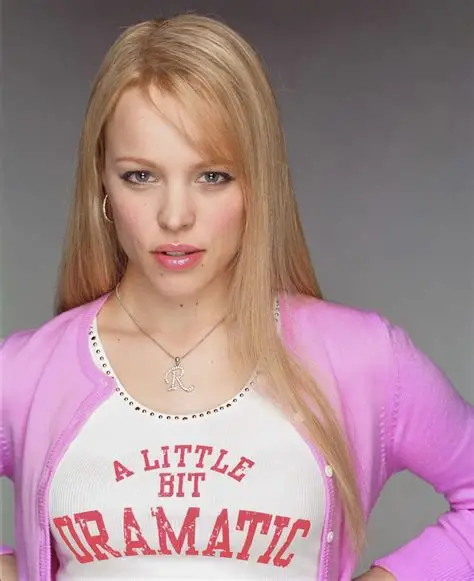
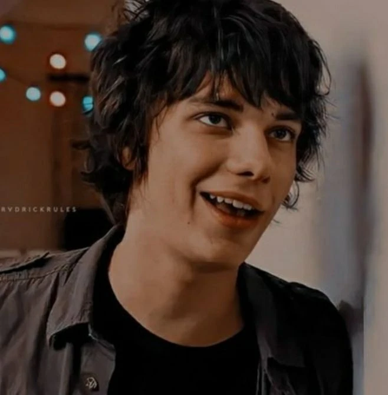
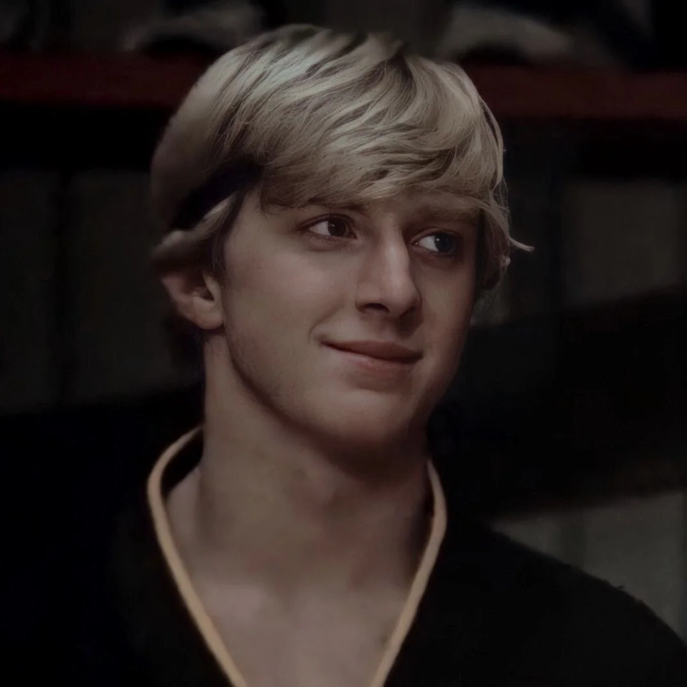
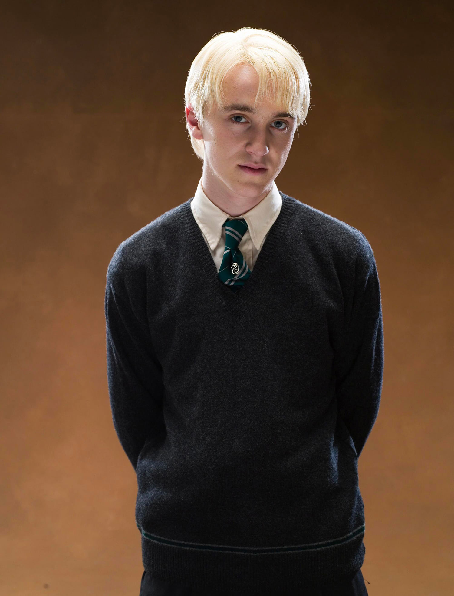

Regina George
Regina thrives on her team with her manipulative leadership and strategy. As team captain, her ability to command attention ensures the team stays united and aggressive. Regina’s competitive nature and ruthless personality means she wouldn’t hesitate to target weaker opponents. In short, she’d combine intimidation with clever tactics, making her a powerful asset in both offense and psychological warfare.
Rodrick Heffley
Rodrick brings a chaotic edge to the team, even with his poor spelling. His laid-back attitude makes him unpredictable. Even though he isn't the most athletic, his mischievous nature means he’d excel at distracting rivals—trash talk, fake-outs, and sneaky plays are his specialty. He’s the wildcard of the team.
Johny Lawrence
Johnny is the team’s powerhouse. He is the most skilled athlete, he’d dominate in both speed and strength, with his accurate throws. "Strike first, strike hard”—translates perfectly to dodgeball, almost making him dangerous. Johnny’s confidence also intimidates opponents, while his loyalty to the group ensures he backs up teammates in intense moments. Make sure not to get him angry because he is not scared to use this karate skills.
Buzz McCallister

Buzz McCallister would add to the team’s intimidation. His sheer size and loud, cocky personality make him perfect for psychological warfare—he’d taunt opponents relentlessly and throw his weight around to dominate the court. He may not be the fastest, but Buzz compensates with brute strength and a willingness to play dirty. Buzz is the muscle and the mouth: a classic bully.
Draco Malfoy
Draco Malfoy would be the team’s smart strategist. Not as strong as the others, Draco compensates with sharp wit and underhanded tactics. He’d also mock opponents, creating doubt, and rallying the team with snide confidence. His resourcefulness means he’d find loopholes in the rules and exploit them, making him the perfect schemer. He’s the main brains of the operation.